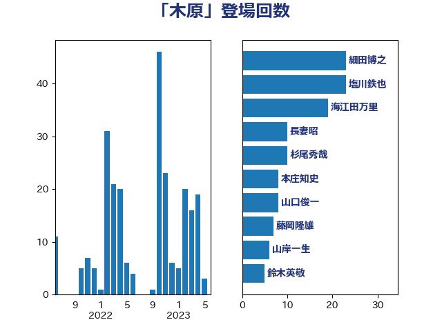

単語「木原」

| 細田博之 | 自由民主党 | 23 回 |
| 塩川鉄也 | 日本共産党 | 23 回 |
| 海江田万里 | 立憲民主党 | 19 回 |
| 長妻昭 | 立憲民主党 | 10 回 |
| 杉尾秀哉 | 立憲民主党 | 10 回 |
| 本庄知史 | 立憲民主党 | 8 回 |
| 山口俊一 | 自由民主党 | 8 回 |
| 藤岡隆雄 | 立憲民主党 | 7 回 |
| 山岸一生 | 立憲民主党 | 6 回 |
| 鈴木英敬 | 自由民主党 | 5 回 |
| 榛葉賀津也 | 国民民主党 | 5 回 |
| 田島麻衣子 | 立憲民主党 | 4 回 |
| 木原誠二 | 自由民主党 | 4 回 |
| 有村治子 | 自由民主党 | 4 回 |
| 岸田文雄 | 自由民主党 | 4 回 |
| 自見はなこ | 自由民主党 | 3 回 |
| 米山隆一 | 立憲民主党 | 3 回 |
| 森屋宏 | 自由民主党 | 3 回 |
| 高良鉄美 | 無所属 | 2 回 |
| 足立康史 | 日本維新の会 | 2 回 |
| 西野太亮 | 自由民主党 | 2 回 |
| 蓮舫 | 立憲民主党 | 2 回 |
| 竹内譲 | 公明党 | 2 回 |
| 福岡資麿 | 自由民主党 | 2 回 |
| 福山哲郎 | 立憲民主党 | 2 回 |
| 磯崎仁彦 | 自由民主党 | 2 回 |
| 牧原秀樹 | 自由民主党 | 2 回 |
| 根本匠 | 自由民主党 | 2 回 |
| 木原稔 | 自由民主党 | 2 回 |
| 徳永久志 | 立憲民主党 | 2 回 |
| 岡本あき子 | 立憲民主党 | 2 回 |
| 小野泰輔 | 日本維新の会 | 2 回 |
| 小川淳也 | 立憲民主党 | 2 回 |
| 大野敬太郎 | 自由民主党 | 2 回 |
| 大西英男 | 自由民主党 | 2 回 |
| 古賀篤 | 自由民主党 | 2 回 |
| 古屋範子 | 公明党 | 2 回 |
| 伊藤俊輔 | 立憲民主党 | 2 回 |
| 鷲尾英一郎 | 自由民主党 | 1 回 |
| 高木啓 | 自由民主党 | 1 回 |
| 馬場成志 | 自由民主党 | 1 回 |
| 階猛 | 立憲民主党 | 1 回 |
| 阿部司 | 日本維新の会 | 1 回 |
| 鈴木俊一 | 自由民主党 | 1 回 |
| 野田聖子 | 自由民主党 | 1 回 |
| 豊田俊郎 | 自由民主党 | 1 回 |
| 西田昭二 | 自由民主党 | 1 回 |
| 笠井亮 | 日本共産党 | 1 回 |
| 空本誠喜 | 日本維新の会 | 1 回 |
| 玄葉光一郎 | 立憲民主党 | 1 回 |
| 滝沢求 | 自由民主党 | 1 回 |
| 清水真人 | 自由民主党 | 1 回 |
| 浜田聡 | NHK党 | 1 回 |
| 武部新 | 自由民主党 | 1 回 |
| 櫻井周 | 立憲民主党 | 1 回 |
| 斉藤鉄夫 | 公明党 | 1 回 |
| 打越さく良 | 立憲民主党 | 1 回 |
| 工藤彰三 | 自由民主党 | 1 回 |
| 山下貴司 | 自由民主党 | 1 回 |
| 小野寺五典 | 自由民主党 | 1 回 |
| 小熊慎司 | 立憲民主党 | 1 回 |
| 宮口治子 | 立憲民主党 | 1 回 |
| 大塚拓 | 自由民主党 | 1 回 |
| 塚田一郎 | 自由民主党 | 1 回 |
| 古賀友一郎 | 自由民主党 | 1 回 |
| 古川康 | 自由民主党 | 1 回 |
| 原口一博 | 立憲民主党 | 1 回 |
| 加藤竜祥 | 自由民主党 | 1 回 |
| 上野賢一郎 | 自由民主党 | 1 回 |
| 上田英俊 | 自由民主党 | 1 回 |